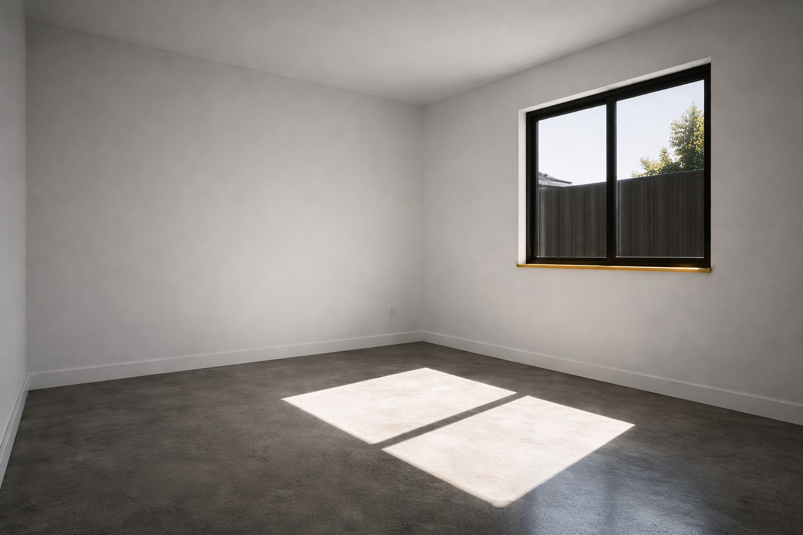
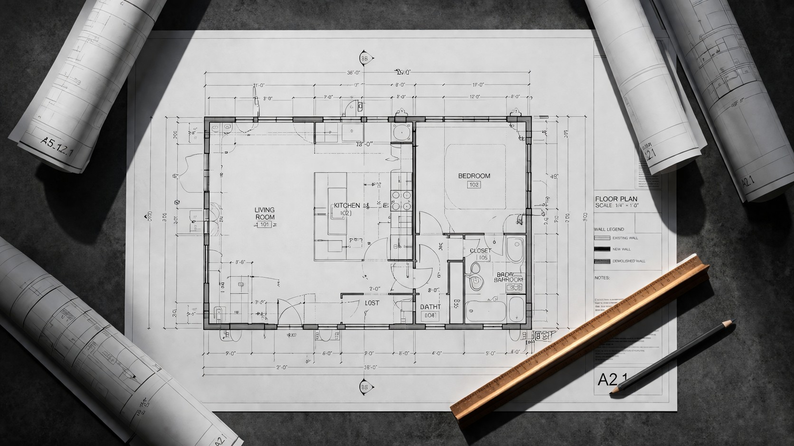

Services
Three services.
All Services →
Three services.
One standard.

01
01
ADU Construction
Built for added space that actually performs. Every ADU starts with a site walk, a scope document, and a clear permit path.
Learn about ADU →
02
Remediation
Fix the cause. Not just the visible symptom. Water intrusion and structural failure have root causes — we find them and solve them permanently.
Learn about Remediation →
02

03
03
Consulting
Get clarity before you commit money. Pre-purchase reviews and scope analysis so you know exactly what you're getting into before work begins.
Learn about Consulting →